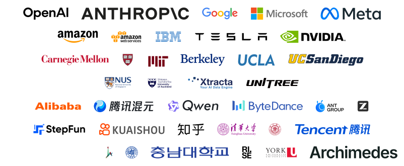
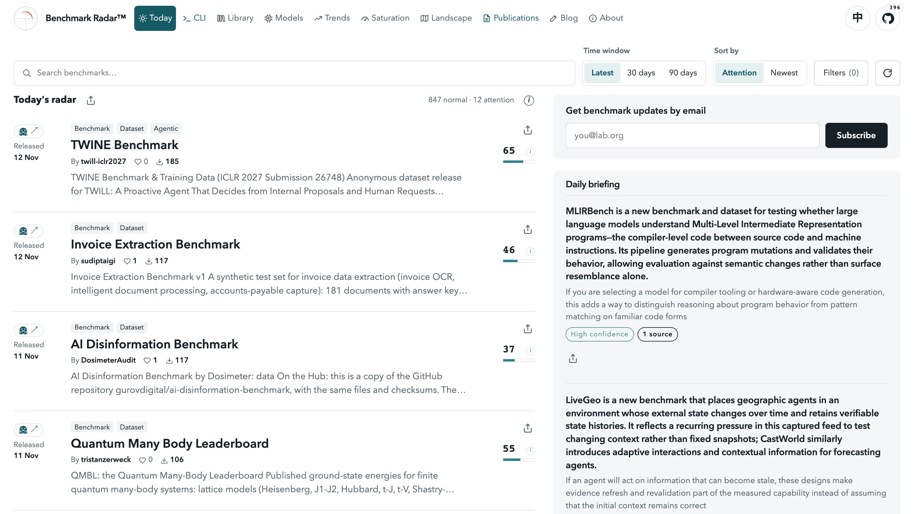
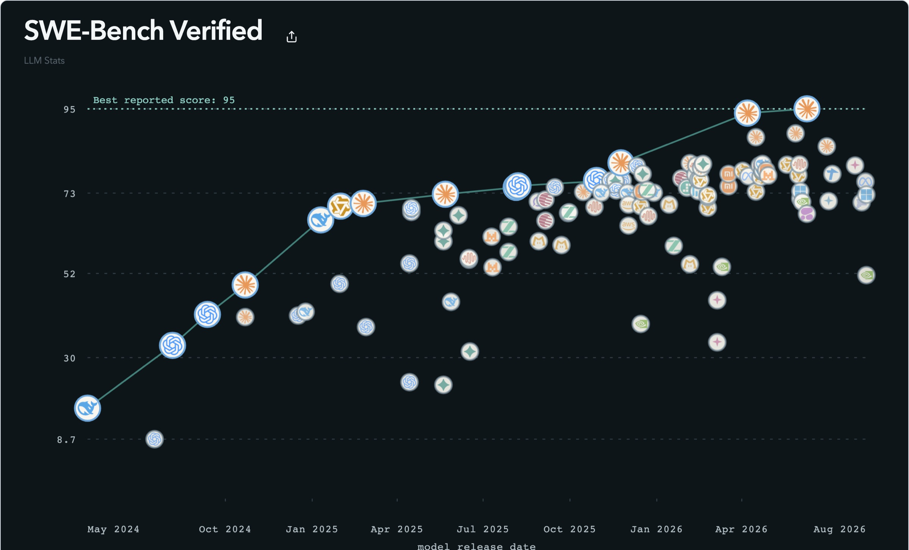
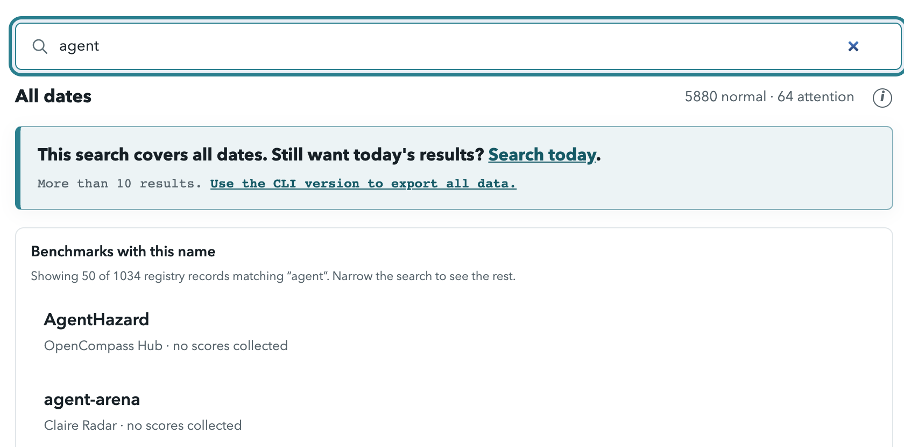
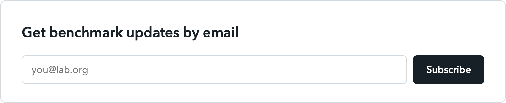
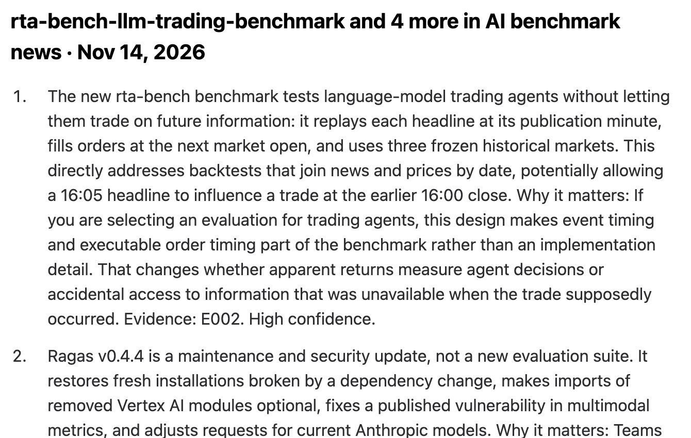

Benchmark Radar
Before you build an eval: has anyone measured this already?
- The answers are scattered. arXiv, GitHub, dataset pages, model cards, technical reports, leaderboards.
- A name is only the start. What does it measure? Is the code still up? Who reported scores, and under which prompt, tools, and attempts?
- And the pile keeps growing: 2,940 new benchmark releases in 90 days.
Credit assignment: 225 leads, 2 papers
- Ask.Jiayu Wang planned an eval and asked: does it duplicate August 2026 work on credit assignment in agentic training, with small Qwen baselines?
- Search.A coding agent installed the Radar Skill and ran several topic variants.
- Judge.Opening each paper left SRPO and HindSearch: August, credit assignment, small Qwen backbone, released code.
What Benchmark Radar is
- Every record keeps its original source and its score history.
- Open: code on GitHub (pipeline MIT, web UI AGPL-3.0), dataset on Hugging Face (MIT; third-party data keeps its own terms).
Who is viewing or using it
- Researchers at OpenAI, Anthropic, Google, Meta, Microsoft, NVIDIA, Amazon, IBM, ByteDance, and Unitree viewed/using it.
- 300+ users across labs, companies, and universities.

How it works
- DiscoverNew benchmarks are found as they appear in papers, repos, datasets, and leaderboards.
- ExtractEach record keeps its original source, the reported score, who reported it, and the date.
- TrackScore history is followed over time, so new results and new versions stay visible.

Levels of benchmarks
- LevelCapabilityExample taskExample benchmarks
- 1Quiz questionsAnswer one fact or one short problemMMLU, GSM8K, HumanEvalMeta, Llama 3.1 405B Instruct model card (2024): MMLU 87.3, HumanEval 89.0, GSM8K 96.8. Newer frontier model cards no longer report these three. Model cardtop scores 87–97%: basically solved
- 2Expert-level questionsQuestions written to stump PhDsHumanity’s Last Exam, FrontierMathLaunch: HLE best 9.4% (Phan et al., Jan 2025, Table 1) arXiv 2501.14249; FrontierMath under 2% (Glazer et al., Nov 2024) arXiv 2411.04872. Now: HLE 54.8% (GPT-6 Astra, Scale/CAIS leaderboard) Leaderboard; FrontierMath Tiers 1–3 52.4% (Apr 2026, original version, Epoch AI) Epoch dataunder 10% at launch → about 50% today
- 3Real coding workFix and build code in real projectsSWE-bench, LiveCodeBenchRahman, Khatoonabadi, Shihab (2025): the same LLMs reach 84–89% correctness on synthetic code tasks and 25–34% on real-world classes. arXiv 2510.26130same models: 84–89% on toy code, 25–34% on real code
- 4Long agent tasksUse tools for hours to reach a goalGAIA, OSWorld, Terminal-BenchMETR, Q4 2026 capability update (Nov 20, 2026): 50% time horizon GPT-6 Astra 40 h (95% CI 13–2,645 h); Opus 5.5 39 h (12–1,253 h). METR updatebest AI finishes half of ~40-hour expert tasks
- 5Whole jobsDo paid work end to endGDPval, Mercor Benchmark MapMercor, Benchmark Map: “90% of American working hours are spent on tasks with little or no coverage from existing benchmarks.” Mercor calls the map provisional. Mercorabout 90% of US work hours barely tested
- 6Testing the testsCheck whether a score means what it claimsHELM, LMArena, validity studiesDesai et al. (Sep 2026), 56 benchmarks: “In some cases, benchmarks that share design elements (e.g., score format) correlate more strongly than benchmarks with the same assigned concept.” arXiv 2609.08812same-format tests can agree more than same-skill tests
- 7Reproducing researchReproduce published research in physics, biology, mathResearchClawBench, PaperBenchResearchClawBench GitHub: rediscovery, the answer is known to someone but hidden from the system. PaperBench arXiv 2504.01848: replication of published work. Stage labels: The AI4S Benchmark Index Tree, Hejia Geng, AItonomy Foundation, aitonomy.org/projects/benchmark.known answers only: rediscovery and replication
The ladder keeps going
- LevelCapabilityExample taskClosest benchmark today
- 8Self-improvementDesign the next chip and its own successorRE-Bench, MLE-benchRE-Bench (METR, 2024) arXiv 2411.15114 and MLE-bench (OpenAI, 2024) arXiv 2410.07095: execution, the method is known. Stage labels: The AI4S Benchmark Index Tree, Hejia Geng, AItonomy Foundation, aitonomy.org/projects/benchmark.set engineering tasks
- 9Open problemsUnsolved math; fusion; agingFormal Conjectures, FrontierMath: Open ProblemsFrontierMath: Open Problems (Epoch AI): “unsolved mathematics problems that have resisted serious attempts by professional mathematicians”, checked by a verifier program Epoch AI. Formal Conjectures (Google DeepMind): open conjectures stated in Lean GitHub. Nothing comparable for fusion or aging.math only
- 10Hidden factsInfer what is not public from what isForecastBenchForecastBench (Karger et al., 2024): questions about future events with no known answer at submission time arXiv 2409.19839.future events only
- 11Chaotic systemsPredict weather, turbulence, marketsWeatherBench 2WeatherBench 2 (Rasp et al., 2023): global medium-range weather forecasts arXiv 2308.15560. No shared benchmark covers turbulence or markets the same way.weather only
- 12Laplace’s demonPredict everythingnonecannot be benchmarked
Only 32 of 361 AI-for-science benchmark listings ask a question nobody could answer when it was built.The AI4S Benchmark Index Tree, Hejia Geng, AItonomy Foundation: 32 of 361 listings are in stage L5, “Frontier advancement”: “When the benchmark was built, nobody knew the answer.” aitonomy.org/projects/benchmark
What changes as you climb
- Levels do not predict each other. Claude Opus 4.5: 80.9% on SWE-bench Verified, 45.9% on SWE-bench Pro. OpenAI o3: 53% on ARC-AGI-1, 2.9% on ARC-AGI-2.SWE-bench: Anthropic, Claude Opus 4.5 System Card, Table 2.4.A (Verified 80.9%) System card; Scale SWE-Bench Pro public leaderboard, standardized harness (45.89%) Leaderboard. ARC-AGI: ARC Prize, o3 (medium), semi-private set, Apr 22, 2025 ARC Prize
- Progress is real at every level. GDPval, expert-graded work: 47.6% wins or ties at launch (Sep 2025), 70.9% three months later.Launch: Claude Opus 4.1, 47.6% wins or ties vs. industry experts (Patwardhan et al.) arXiv 2510.04374. Dec 2025: GPT-5.2 Thinking, 70.9% (OpenAI) OpenAI
- Read every score with its level. A Level 1 number cannot settle a Level 4 question.
Attention
Papers
- This is an association, not a cause. A paper and stars can both come from a well-resourced team.
- For your team: a paper-less benchmark is not wrong, but its setup is harder to check.
Abandoned repos
- A finished benchmark can be pushed once. One-day repos measure activity, not quality.
- A missing repo is a dead citation. Radar now lists gone and archived repos without ranking them.
Saturation

Audits
SWE-bench Pro
public tasks underdetermined (15.0% floor); 3 gold patches fail the benchmark's own verifier.
Published June 21, 2026: 17 days before OpenAI's audit (July 8) estimated ~30% of tasks broken.
Terminal-Bench 2.1
gold-passing tasks still pass after a careless in-workspace deletion.
DeepSWE
reference solutions fail their own verifiers (v1.0). The v1.1 re-grade fixed 3 of them.
- Radar lists 9 audits of 8 benchmarks, all by June Kim: also ProgramBench, MirrorCode, FrontierCode, SlopCodeBench, and Frontier-Bench.
Benchmarks’ Last Exam
Terminal-Bench 4.0
tasks refused: a confirmed material defect in the task or its grading (75.8%).
Harvey Legal Agent Benchmark
tasks refused. AutomationBench 1.0.6: also 71 of 100.
HLE-Diamond
tasks refused; AA-Omniscience v1.1: 1 of 100. Refusal rates differ widely across benchmarks.
- Across 8 benchmarks: 336 of 749 reviewed tasks refused and 67 doubtful, in five failure classes from wrong reference answers to scoring bypasses and answer leakage.
A five-step check
Discover wide
Start from the full landscape, not from what is trending.
Check provenance
Find the paper, the repo, and who reported each score. Confirm the repo still exists.
Check saturation
Ask whether it still separates your candidate models.
Check audits
Look for an independent recheck before you rely on it.
Schedule retirement
Decide in advance when the eval gets dropped, and write the date down.
What is next
- Wider coverage. More sources, more benchmarks, and faster pickup of new releases.
- A deeper audit layer. More audit records linked to the scores they examine.
- Interop with community efforts. Radar's records should flow into shared efforts such as Every Eval Ever, not sit in a silo.
- Better history views. Score movement over time, readable at a glance.
Let your agent draft Related Work
- Install once.One command adds the Benchmark Radar Skill to your coding agent.
- Name your themes.Ask your agent for a Related Work section, one paragraph per theme.
- Get LaTeX and BibTeX.A cited Related Work draft and the missing BibTeX entries, ready to edit.
$ npx skills add ktwu01/benchmark-radar --skill benchmark-radar
Search for it. If it is missing, add it.
- Search.52,120 benchmark records from 41 public sources, one search box.
- Not there?Open the “Submit a benchmark” form on GitHub. English or Chinese is fine.
- Help the next team.Every benchmark you add is one more that others can find.

Get new benchmarks by email
- Open the homepage.The signup box sits next to the search results.
- Pick daily or weekly.Daily brings the latest each day; weekly arrives every Monday.
- Leave anytime.Every email has an unsubscribe link.
- No email needed.The same Daily briefing is on the homepage.


Get involved
- Use the dataset. The full record set is open: huggingface.co/datasets/ktwu01/benchmark-radar
- Contribute a benchmark. If Radar missed one you care about, adding it is a small issue.
- Report an error. A wrong score or a missing source is worth a flag.
- Publish an audit. Radar links it next to the scores it examines.
- Start at benchmark-radar.org. Code and issues: github.com/ktwu01/benchmark-radar
My career journey
- USTC, Space Science and Technology (2020–2024)Space physics research and a first-author paper in JGR: Space Physics.
- UT Austin, Ph.D. trackResearch on Noah-MP, the land surface model inside weather and climate models.
- Noah-MP-bench, M.A. report (Dec 2026)A benchmark for whether AI-generated changes to Noah-MP stay physically consistent.
- Benchmark RadarI lead the living map in this talk: 52,120 records, 41 sources, viewed or used by researchers at major labs.
Next: a role in AI evaluation, from Feb 2027.
Questions I asked myself
- What’s the thing I love?
- What’s the thing people care about?
- What’s the most important topic?
Acknowledgments
June Kim
Independent audits of SWE-bench Pro, Terminal-Bench 2.1, DeepSWE, and five more benchmarks: the evidence behind Finding 5.
Prahitha Movva and Cohere Labs
For hosting this talk in the Open Science Community.